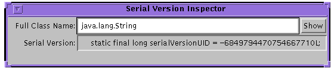

| 목차 | 전의 항목 | 다음의 항목 | Java 객체 직렬화 스펙 Version 6.0 |
|
제 4 장 |
ObjectStreamClass는, 직렬화 스트림에 보관되는 클래스의 정보를 돌려줍니다. 그 기술자에게는, 그 클래스의 완전 수식명과 그 직렬화 버젼 UID 가 나타납니다.SerialVersionUID는, 이 클래스가 스트림을 기입하거나 읽어들이거나 할 수 있는 고유의 오리지날 클래스 버젼을 특정합니다.package java.io; public class ObjectStreamClass { public static ObjectStreamClass lookup(Class cl); public static ObjectStreamClass lookupAny(Class cl); public String getName(); public Class forClass(); public ObjectStreamField[] getFields(); public long getSerialVersionUID(); public String toString(); }lookup메소드는, 가상 머신의 지정된 클래스에 대한ObjectStreamClass기술자를 돌려줍니다. 이 클래스에serialVersionUID가 정의되고 있으면, 그것이 이 클래스로부터 꺼내집니다.serialVersionUID가 클래스에 의해 정의되어 있지 않으면, 가상 머신에 있는 이 클래스의 정의로부터 계산됩니다. 지정된 클래스가 Serializable 도 Externalizable 도 아닌 경우, null 가 돌려주어집니다.
lookupAny메소드의 동작은lookup메소드의 동작과 같습니다만,Serializable를 구현할지 어떨지에 관계없이, 임의의 클래스의 기술자를 돌려주는 점만이 다릅니다.Serializable를 구현하지 않는 클래스의serialVersionUID는 0L 입니다.
getName메소드가 돌려주는 클래스명의 형식은,Class.getName메소드가 사용하는 형식과 같게 됩니다.
forClass메소드는,ObjectInputStream.resolveClass메소드가 로컬의 가상 머신내에Class를 검출했을 경우에, 그Class를 돌려줍니다. 그 이외의 경우는,null 를 돌려줍니다.
getFields메소드는, 이 클래스의 직렬화 가능 필드를 나타내는ObjectStreamField객체의 배열을 돌려줍니다.
getSerialVersionUID메소드는, 이 클래스의serialVersionUID를 돌려줍니다. 「4.6 스트림 고유 식별자」를 참조해 주세요. 이 클래스에 의해 정의되어 있지 않은 경우는, 미국 국립 표준 기술 연구소에 의해 정의되고 있는 Secure Hash Algorithm (SHA)를 사용해, 클래스의 이름, 인터페이스, 메소드, 필드로부터 계산된 해시치가 돌려주어집니다.
toString메소드는, 클래스 기술자의 프린트 가능한 표현을 돌려줍니다. 클래스 기술자로서는, 클래스의 이름과serialVersionUID가 있습니다.
ObjectStreamClass 기술자를 사용해, 직렬화 스트림에 보존되고 있는 다이나믹 프록시 클래스 (java.lang.reflect.Proxy 의 getProxyClass 메소드에의 호출을 개입시켜 취득되는 클래스 등)에 대한 정보를 제공할 수도 있습니다. 다이나믹 프록시 클래스 자체는 직렬화 가능 필드를 가지지 않고, 0L 의 serialVersionUID 를 가집니다. 즉, 다이나믹 프록시 클래스의 Class 객체가 ObjectStreamClass 의 static lookup 메소드에게 건네지면(자), 반환되는 ObjectStreamClass 인스턴스는, 다음의 프로퍼티을 가집니다.
ObjectStreamClass 의 직렬화 된 형식은, 그 형식이 표현하는 Class 객체가 직렬화 가능한지 어떤지, 외부화 가능한지 어떤지, 또는 다이나믹 프록시 클래스일지 어떨지에 따라서 다릅니다.다이나믹 프록시 클래스를 표현하지 않는
ObjectStreamClass인스턴스가 스트림에 기입해질 때, 클래스명과serialVersionUID, 플래그, 및 필드수가 기입해집니다. 클래스에 따라서는, 그 외의 정보가 기입해지는 일도 있습니다.
- 직렬화가 불가능한 클래스는, 필드수가 항상 제로입니다.
SC_SERIALIZABLE및SC_EXTERNALIZABLEflag bit는 설정되지 않습니다.- 직렬화 가능 클래스에서는,
SC_SERIALIZABLE플래그가 설정되어 필드수에는 직렬화 가능 필드의 수가 카운트 되어 그 후에 각 직렬화 가능 필드의 기술자가 계속됩니다. 기술자는, 표준적인 순서로 기입해집니다. 최초로, 원시형의 필드의 기술자가 필드명으로 소트 되어 기입해져 다음에, 객체형의 필드의 기술자가 필드명으로 소트 되어 기입해집니다. 이름의 소트에는,String.compareTo가 사용됩니다. 이 형식의 상세한 것에 대하여는,「6.4 스트림 형식의 문법」을 참조해 주세요.- 외부화 가능 클래스에서는, 플래그는
SC_EXTERNALIZABLE플래그를 포함해, 필드수는 항상 제로입니다.- enum 형에서는, 플래그는
SC_ENUM플래그를 포함해, 필드수는 항상 제로입니다.
ObjectOutputStream 가 다이나믹 프록시 클래스의 ObjectStreamClass 기술자를 직렬화할 때, Class 객체를 java.lang.reflect.Proxy 의 isProxyClass 메소드에 건네주는 것에 의해 결정되는 대로, 다이나믹 프록시 클래스가 구현하는 인터페이스수를 기술해, 그 후에 인터페이스의 이름을 계속합니다. 다이나믹 프록시 클래스의 Class 객체의 getInterfaces 메소드의 호출로부터 반환되는 순서에 따라 인터페이스가 리스트 됩니다.다이나믹 프록시 클래스 및 비다이나믹 프록시 클래스의 ObjectStreamClass 기술자의 직렬화 표현은, 사용하는 타입 코드의 종류 (TC_PROXYCLASSDESC 및 TC_CLASSDESC 의 어느 쪽인지)에 따라서 다릅니다. 문법의 스펙에 대한 자세한 것은「6.4 스트림 형식의 문법」을 참조해 주세요.
ObjectStreamField는, 직렬화 가능 클래스의 직렬화 가능 필드를 표현합니다. 클래스의 직렬화 가능 필드는,ObjectStreamClass로부터 취득할 수 있습니다.특별한 정적 직렬화 가능 필드 (
serialPersistentFields)는ObjectStreamField컴퍼넌트의 배열이며, 디폴트의 직렬화 가능 필드의 오버라이드(override)에 사용됩니다.package java.io; public class ObjectStreamField implements Comparable { public ObjectStreamField(String fieldName, Class fieldType); public ObjectStreamField(String fieldName, Class fieldType, boolean unshared); public String getName(); public Class getType(); public String getTypeString(); public char getTypeCode(); public boolean isPrimitive(); public boolean isUnshared(); public int getOffset(); protected void setOffset(int offset); public int compareTo(Object obj); public String toString(); }ObjectStreamField객체는, 클래스의 직렬화 가능 필드의 지정, 또는 스트림에 존재하는 필드의 기술에 사용됩니다. 그 생성자 은, 표현하는 필드를 기술하는 인수를 받습니다. 인수에는, 필드의 형태를 지정하는 캐릭터 라인, 필드의 타입을 지정하는Class객체, 및, 디폴트의 직렬화/직렬화 복원이 사용중의 경우에 필드의 값을 비공유 객체로서 읽고 쓰기할 필요가 있을지 어떨지를 나타내는boolean플래그 (2 개의 인수를 취하는 생성자 에서는 암묵적으로false)가 있습니다 (3.1 및 2.1 의 각 절로ObjectInputStream.readUnshared메소드 및ObjectOutputStream.writeUnshared메소드의 설명을 참조).
getName메소드는, 직렬화 가능 필드의 이름을 돌려줍니다.
getTypeString메소드는, 필드의 형태의 시그니챠를 돌려줍니다.
getTypeCode메소드는, 필드의 형태의 문자 인코딩을 돌려줍니다 (`B''는byte,`C'는char,`D'는double,`F'는float,`I'는int,`J'는long,`L'비배열 객체형,`S'는short,`Z'는boolean,`[`는 배열).
isPrimitive메소드는, 필드가 원시형의 경우는true를 돌려주어, 그 이외의 경우는false를 돌려줍니다.
isUnshared메소드는, 필드의 값을 비공유 객체로서 기입할 필요가 있는 경우는true를 돌려주어, 그 이외의 경우는false를 돌려줍니다.
getOffset메소드는, 필드를 정의하는 클래스의 인스턴스 데이터내에서의 필드치의 오프셋(offset)를 돌려줍니다.
setOffset메소드는,getOffset메소드로부터 반환된 오프셋(offset)치를ObjectStreamField서브 클래스에서 변경할 수 있도록(듯이) 합니다.
compareTo메소드는, 소트에 사용하기 위해서(때문에)ObjectStreamFields를 비교합니다. 프리미티브(primitive) 필드는, 비프리미티브(primitive) 필드보다 「작다」순위에 순위매김. 같은 형태의 필드는, 알파벳순서에 순위매김.
toString메소드는, 이름, 및 형태와 함께, 프린트 가능한 표현을 돌려줍니다.
프로그램 serialver 를 사용하면(자), 클래스가 직렬화 가능한가 어떤가를 판단해, 그serialVersionUID를 얻을 수 있습니다. -show 옵션을 지정해 호출하면(자), 이 프로그램은 간단한 사용자 인터페이스를 표시합니다. 클래스가 직렬화 가능한가 어떤가를 알아, 그 serialVersionUID 를 얻으려면 , 그 클래스명 전체를 지정해, Enter 키나 [Show] 버튼을 누릅니다. 표시된 캐릭터 라인은, 카피해, 전개된 클래스에 페이스트 할 수가 있습니다.

serialver 는, 커멘드행으로부터 불려 갔을 때에 1 개(살) 또는 복수의 클래스명이 지정되고 있으면(자), 전개중의 클래스에 각각의 클래스의serialVersionUID를 카피할 수 있는 것 같은 형식에서 표시합니다. 인수가 지정되어 있지 않으면 이 프로그램의 사용 방법이 표시됩니다.
버젼 관리된 각 클래스에서는, 오리지날 클래스 버젼을 지정할 필요가 있어, 거기에 따라 스트림의 기입해, read가 가능하게 됩니다. 예를 들어, 버젼 관리된 클래스는, 다음과 같이 선언할 필요가 있습니다.private static final long serialVersionUID = 3487495895819393L;스트림 고유 식별자는, 클래스명, 인터페이스 클래스명, 메소드, 및 필드를 해시 한 64 비트의 값입니다. 최초의 버젼을 제외한 클래스의 모든 버젼으로, 이 값을 선언할 필요가 있습니다. 이 값은, 오리지날 클래스에 선언할 수도 있습니다만, 필수가 아닙니다. 호환성이 있는 모든 클래스에서, 이 값은 일정입니다. 클래스에 대해서 이 SUID 를 선언하지 않으면 이 값은 그 클래스의 해시가 됩니다. 다이나믹 프록시 클래스 및 enum 형의serialVersionUID는, 항상 값 0L 가 됩니다. 배열 클래스는serialVersionUID를 명시적으로 선언할 수 없기 때문에, 항상 디폴트의 계산치를 가집니다만, 배열 클래스에 관해서는serialVersionUID치의 일치 요건은 적용되지 않습니다.
주 - 모든 직렬화 가능한 클래스는,serialVersionUID의 값을 명시적으로 선언하는 것을 강하게 추천합니다. 이것은, 디폴트의serialVersionUID의 산출은, 컴파일러 구현에 의해 다른 일이 있는 클래스의 상세하게 따라 크게 바뀌어, 그 때문에 직렬화 복원중에serialVersionUID의 예기치 않은 경합이 발생해 직렬화 복원이 실패할 가능성이 있기 (위해)때문에입니다.
Externalizable클래스의 초기 버젼에서는, 장래적으로 확장 가능한 스트림 데이터 형식을 출력할 필요가 있습니다.readExternal메소드의 초기 버젼은,writeExternal메소드의 장래의 모든 버젼의 출력 형식을 읽어내 가능하지 않으면 안됩니다.
serialVersionUID는, 그 클래스 정의를 반영한 바이트 스트림의 시그니챠를 사용해 계산됩니다. 스트림의 시그니챠의 계산에는, 미국 국립 표준 기술 연구소 (NIST)의 Secure Hash Algorithm (SHA-1)가 사용됩니다. 64 비트 해시에는, 최초의 2 개의 32 비트가 사용됩니다. 프리미티브(primitive) 데이터형으로부터 바이트열에의 변환에는,java.lang.DataOutputStream가 사용됩니다. 이 스트림에 입력되는 값은, 클래스에 대한 JavaTM 가상 머신 (VM)의 지정에 의해 정의됩니다. 클래스의 수식자에는ACC_PUBLIC,ACC_FINAL,ACC_INTERFACE, 및ACC_ABSTRACT플래그가 있습니다. 그 외의 플래그는 무시되어serialVersionUID의 계산에 영향을 주지 않습니다. (와)과 같이 필드의 수식자에서는,ACC_PUBLIC,ACC_PRIVATE,ACC_PROTECTED,ACC_STATIC,ACC_FINAL,ACC_VOLATILE, 및ACC_TRANSIENT플래그만이serialVersionUID의 값의 계산에 사용됩니다. 생성자 및 메소드의 수식자의 경우는,ACC_PUBLIC,ACC_PRIVATE,ACC_PROTECTED,ACC_STATIC,ACC_FINAL,ACC_SYNCHRONIZED,ACC_NATIVE,ACC_ABSTRACT, 및ACC_STRICT플래그만이 사용됩니다. 이름과 기술자는,java.io.DataOutputStream.writeUTF메소드가 사용하는 형식에서 기술됩니다.
private static 와 private transient 의 필드를 제외하다)
<clinit>
java.lang.reflect.Modifier.STATIC
() V
private 가 아닌 각 생성자 의 경우
<init>
private 가 아닌 각 메소드의 경우
DataOutputStream 에 의해 작성된 바이트 스트림에 대해서 실행되어 5 개의 32 비트치로부터 되는 sha[0..4] 를 작성합니다.
H0 H1 H2 H3 H4 는,sha 라는 이름의 5 개의 int 치의 배열로, 해시치는 다음과 같이 계산됩니다.
long hash = ((sha[0] >>> 24) & 0xFF) | ((sha[0] >>> 16) & 0xFF) << 8 | ((sha[0] >>> 8) & 0xFF) << 16 | ((sha[0] >>> 0) & 0xFF) << 24 | ((sha[1] >>> 24) & 0xFF) << 32 | ((sha[1] >>> 16) & 0xFF) << 40 | ((sha[1] >>> 8) & 0xFF) << 48 | ((sha[1] >>> 0) & 0xFF) << 56;